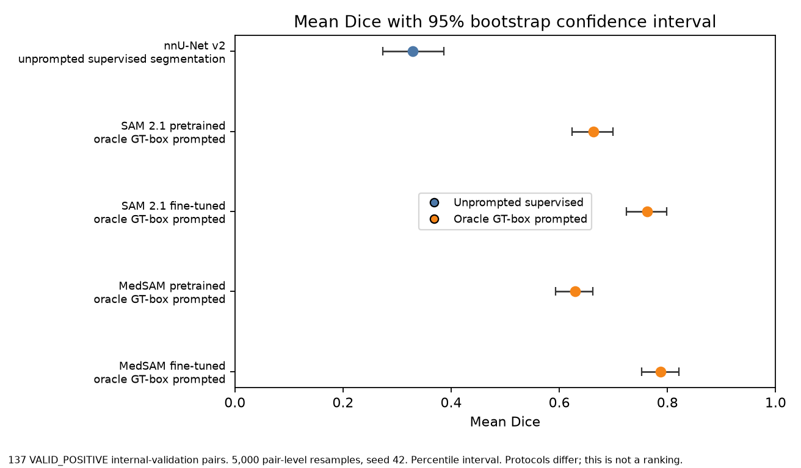
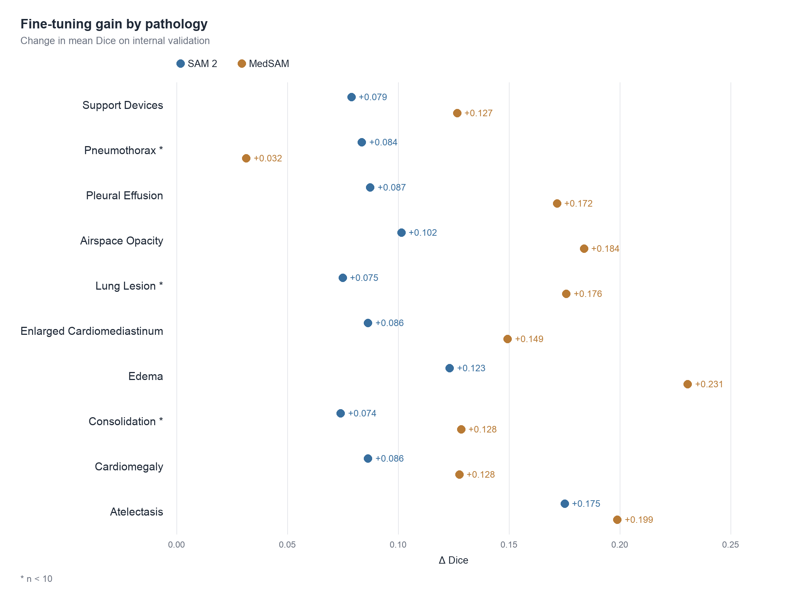
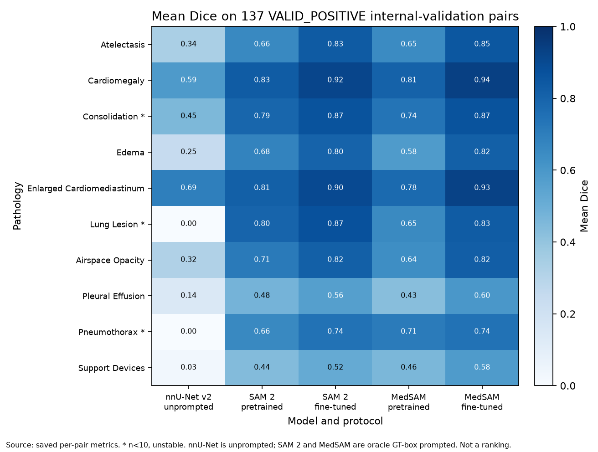
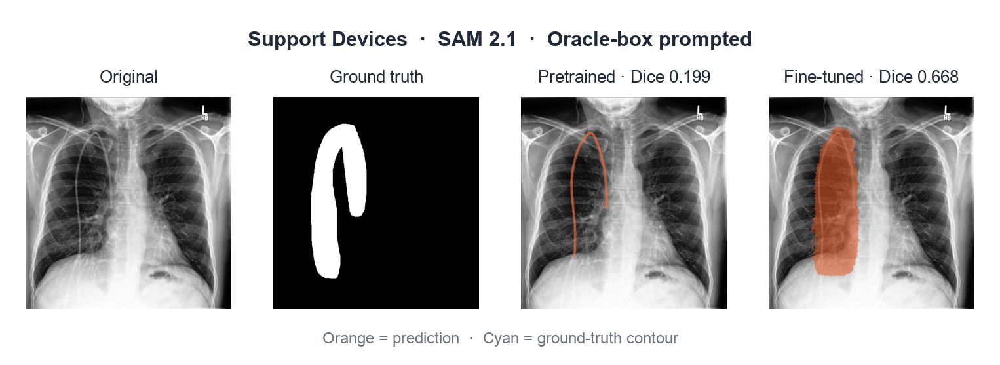
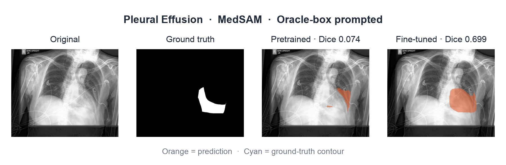
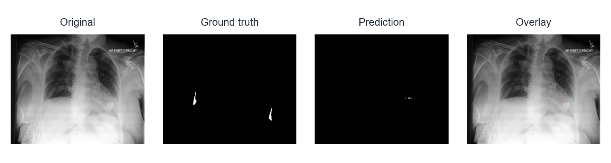
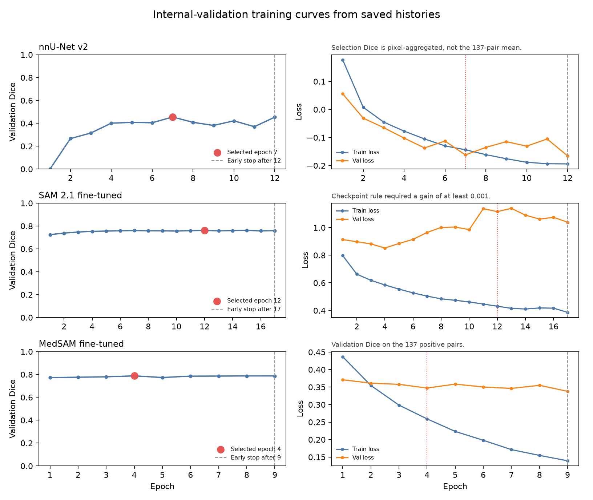

Multi-label chest X-ray segmentation
Evaluating whether task-specific fine-tuning improves SAM 2.1 and MedSAM for segmentation of 10 chest X-ray findings on CheXlocalize. An unprompted nnU-Net model provides a separate supervised reference baseline.
Pleural Effusion, representative internal-validation example
Project overview
CheXlocalize [1] provides radiologist localization annotations for ten findings on CheXpert [5] chest X-rays. In this project, I built a multi-label segmentation pipeline to evaluate how well different models can segment these findings.
Research question
Does task-specific fine-tuning improve SAM 2.1 and MedSAM for chest X-ray pathology segmentation when the approximate location of the finding is provided?
To answer this, I compared the pretrained and fine-tuned versions of SAM 2.1 and MedSAM using oracle bounding-box prompts derived from the ground-truth masks. I also trained an unprompted nnU-Net model as a separate supervised baseline.
The ten segmentation targets are Atelectasis, Cardiomegaly, Consolidation, Edema, Enlarged Cardiomediastinum, Lung Lesion, Airspace Opacity, Pleural Effusion, Pneumothorax, and Support Devices.

Dataset and Preprocessing
CheXlocalize stores segmentation masks using run-length encoding (RLE), a compact way of representing labeled pixels. I decoded these annotations into binary masks for model training and evaluation. Since multiple findings can occur in the same X-ray and their masks can overlap, the task was treated as multi-label segmentation.
For model development, the official validation set was split at the patient level into 161 training patients and 39 internal-validation patients, with no patient appearing in both sets.
Label handling
| Status | Meaning |
|---|---|
| VALID_POSITIVE | A non-empty localization mask is available. |
| VALID_NEGATIVE | The finding is confirmed absent; excluded from headline Dice results so empty masks do not inflate performance. |
| IGNORE | The finding is positive or uncertain but has no localization mask, so it is excluded. |
Overlapping findings
Some pathologies overlap within the same image. For example, Cardiomegaly and Enlarged Cardiomediastinum can share part of the same region.
Overlapping pathology annotations


- Green = Cardiomegaly
- Blue = Enlarged Cardiomediastinum
- Yellow = overlap
Because findings can overlap, each pathology was treated as a separate binary segmentation task, allowing the same pixel to belong to more than one pathology.
Methods
Three segmentation approaches were evaluated: an unprompted nnU-Net baseline and two prompt-based models, SAM 2.1 and MedSAM.
| Model | Input | Experiment |
|---|---|---|
| nnU-Net v2 | Chest X-ray | Supervised baseline |
| SAM 2.1 | Chest X-ray + oracle box | Pretrained vs. fine-tuned |
| MedSAM | Chest X-ray + oracle box | Pretrained vs. fine-tuned |
nnU-Net v2
nnU-Net was trained as a supervised baseline using only the chest X-ray as input. It predicted segmentation masks for all 10 pathologies without a location prompt.
SAM 2.1 and MedSAM
SAM 2 was evaluated before and after fine-tuning using an oracle box for each pathology. MedSAM was evaluated before and after fine-tuning using the same oracle-box setup.
Why use an oracle box?
SAM 2 and MedSAM require a location prompt. The oracle box was generated from the ground-truth mask so that both the pretrained and fine-tuned versions received the same approximate pathology location.
Results
All five model conditions were evaluated on the same 1,534 positive image–pathology pairs from the official CheXlocalize test set.
The official test annotations had previously been inspected for dataset-level overlap/schema analysis, but test performance was not used for training, checkpoint selection, thresholds, early stopping, or hyperparameter tuning.
1. Official Test Performance
| Model | Setting | Dice | 95% CI | IoU |
|---|---|---|---|---|
| nnU-Net v2 | Unprompted baseline | 0.310 | [0.294, 0.326] | 0.234 |
| SAM 2.1 | Pretrained + oracle box | 0.646 | [0.635, 0.657] | 0.512 |
| SAM 2.1 | Fine-tuned + oracle box | 0.742 | [0.731, 0.753] | 0.630 |
| MedSAM | Pretrained + oracle box | 0.607 | [0.597, 0.618] | 0.467 |
| MedSAM | Fine-tuned + oracle box | 0.772 | [0.763, 0.781] | 0.664 |
Fine-tuning improved segmentation performance for both prompted foundation models on the official test set.
2. Fine-Tuning Gains
| Model | Dice | Gain | 95% CI |
|---|---|---|---|
| SAM 2.1 | 0.646 → 0.742 | +0.096 | [0.091, 0.102] |
| MedSAM | 0.607 → 0.772 | +0.165 | [0.158, 0.172] |
3. Validation to Test Generalization
| Model | Internal-validation gain | Official-test gain |
|---|---|---|
| SAM 2.1 | +0.099 | +0.096 |
| MedSAM | +0.159 | +0.165 |
The fine-tuning gains remained similar on the official test set, indicating that the improvement was not limited to the internal-validation split.

4. Performance by Pathology
Segmentation performance and the benefit of fine-tuning varied across pathologies.


Discussion
This project tested whether task-specific fine-tuning improves SAM 2 and MedSAM for chest X-ray segmentation when approximate pathology location is provided. On the official test set, Dice increased from 0.646 to 0.742 for SAM 2 and from 0.607 to 0.772 for MedSAM, indicating better overlap with the radiologist masks after fine-tuning. The gains were similar to those seen during internal validation, although performance varied across pathologies. A next step would be to replace oracle boxes with automatically predicted locations and test the models on an external dataset.
Qualitative results
Qualitative examples show how fine-tuning changed the predicted masks and where segmentation remained difficult.


Failure case — Pleural Effusion

Training
Training used PyTorch on an A100 GPU. Each run stopped after five epochs without a Dice gain of 0.001. Selected checkpoints: nnU-Net epoch 7, SAM 2 epoch 12, MedSAM epoch 4.

Limitations
Oracle-box Dice and unprompted Dice answer different questions, so the table is not an architecture ranking. Checkpoints were chosen on internal validation; the official test was scored after that choice was frozen. On the official test, Pneumothorax has 10 pairs and Lung Lesion has 14. Pairs share images and patients, so the bootstrap intervals can be too narrow. This is not clinically validated.
References
- Saporta et al. Benchmarking saliency methods for chest X-ray interpretation. Nature Machine Intelligence (2022). 10.1038/s42256-022-00536-x. Dataset: 10.71718/hap9-kn94.
- Isensee et al. nnU-Net: a self-configuring method for deep learning-based biomedical image segmentation. Nature Methods 18, 203–211 (2021). 10.1038/s41592-020-01008-z.
- Ravi et al. SAM 2: Segment Anything in Images and Videos. International Conference on Learning Representations (2025). arXiv:2408.00714.
- Ma et al. Segment anything in medical images. Nature Communications 15, 654 (2024). 10.1038/s41467-024-44824-z.
- Irvin et al. CheXpert: a large chest radiograph dataset with uncertainty labels and expert comparison. AAAI (2019). 10.1609/aaai.v33i01.3301590.